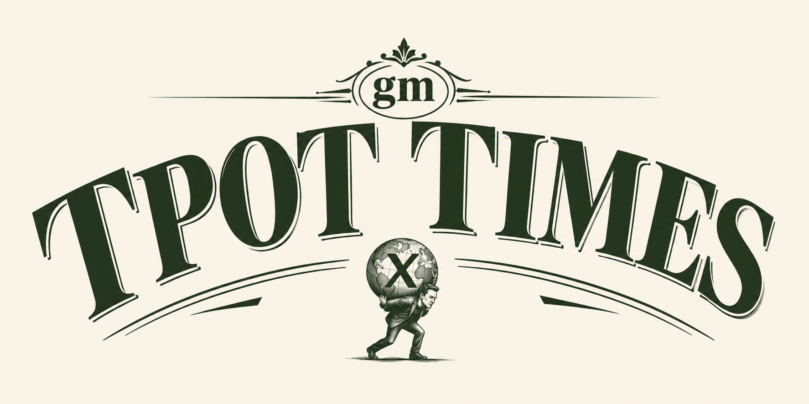

Friday, 1 August 2026Independent & unhurriedIssue no. 001

Humans of TPOT™
The big story
Leopold Aschenbrenner, the celebrity husband of Anthropic CoS, suffered major losses and had to sell somethings from his fund to other big fund
Mr Leopold was not avaiable for comment, but from what we heard was that he was leveraged to the head and then something happened and then he had losses. There is also a letter that he sent to his investors. It was about how everything is alright and no need to worry.
Anthropic and OpenAI again fussing over who hacked who more
Anthropic said we hacked something, then OpenAI said we hacked 3 somethings, then Anthropic said we hacked more than 3 things, please leave the models alone, giving them difficult tasks makes them do wrong things, like humans,
Deepseek released a new model DeepSeek-V4-Flash which performs much better than the preview model
The benchmarks are live and the API too, people are saying it is good, we can only confirm that after using it ourselves. Stay Tuned.
A black Centaur like Robot seems to garner negative reviews
Turns out making evil looking robots is not highly liked by the community,
Weekend watchDonald Trump is going to attack Iran
As he always says on the weekends.
As he always says on the weekends.
The bulletin
humansoftpot.com